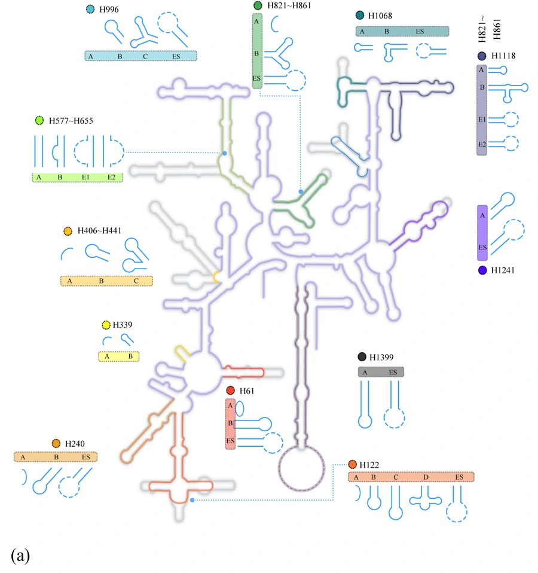
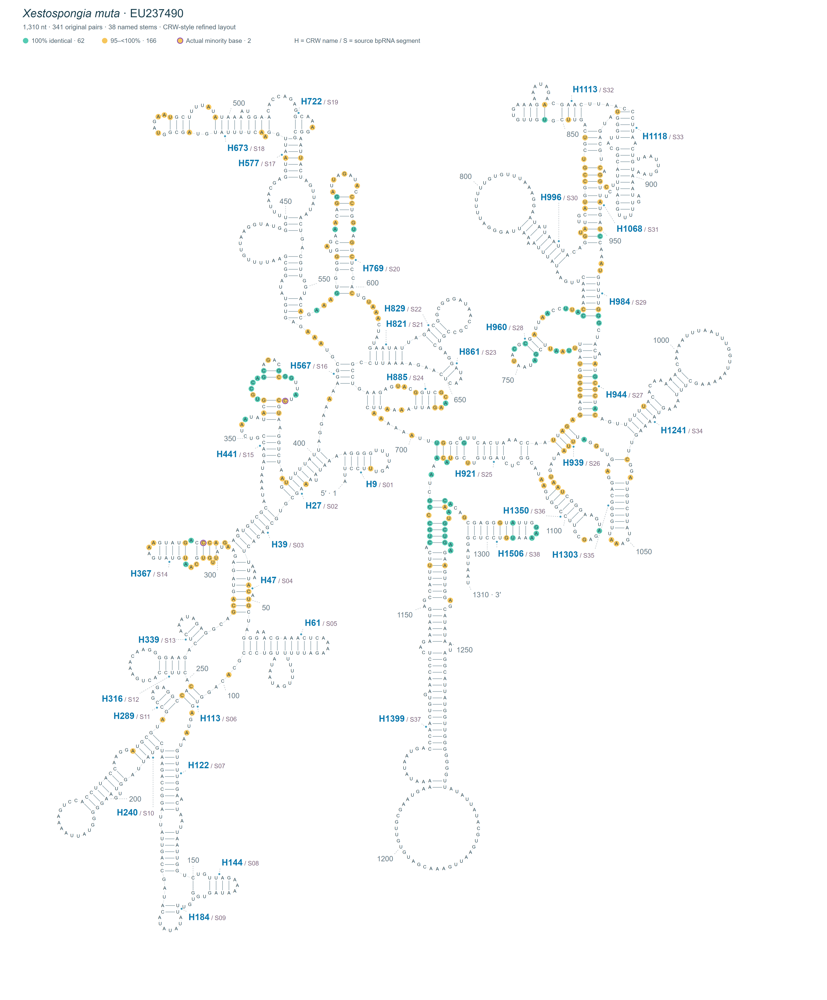

PORIFERA / MITOCHONDRIAL SSU rRNA
海绵线粒体
rRNA结构图谱
A shared scaffold. Diverse local structures.
在共同的同源结构坐标中，浏览海绵线粒体小亚基rRNA的保守骨架与局部变异。从科研图版进入记录、序列和结构类型。
bioRxiv 预印本 · v1 · 30 August 2026 复制论文引用 ↗

01 / FIGURE GALLERY
从图版认识结构
保留作者原图，支持放大及原图查看。
02 / DATA EXPLORER
浏览记录与分类群
源于补充表S2b与S2c。记录数不等同物种数。
正在载入216条记录…
| 登录号 | 物种 | 目 / 纲 | 长度 nt | 组合类型 | 记录详情 |
|---|
数据核对提示：1条记录的表格序列与结构文件待核对
JX978470在S2b中为1,003 nt，但S6结构文件对应序列为1,277 nt。本站保留原始来源，不自动替换；该记录的配对展示与单条结构导出暂不可用。其余215条序列在忽略字母大小写后匹配。
03 / STRUCTURAL TYPES
十二个子结构，各有变化
选择子结构，对照类型形态与216条记录中的类型占比。
H61
论文数据快照 · 216条记录
类型字母仅在当前子结构内有意义，不同子结构的“A”不表示同一种结构。
NEW / PAIRED-COLUMN EXPLORER
从中心结构，回到原始比对
EU237490 · 341个模板配对 · 双向点击联动

341对 → 682个原矩阵列 → 197条序列
中心物种为Xestospongia muta（EU237490）。结构图已精修loop弧线与helix间距，添加38个CRW茎环名称和放大外置的位置编号。青绿高光62个完全一致位点，金黄高光额外166个≥95%一致位点。点击碱基、配对线或茎环名可跳转原比对双窗口。
本模块使用197条 × 5,390列的手工比对快照，与上方216条论文数据范围不同，分母不混用。组合兼容性不等同实际配对验证；不重新比对或折叠。
04 / DATA & REUSE
获取论文配套数据
以下下载对应bioRxiv v1，不随未来仓储更新而替换。使用数据请引用原论文；图版与数据未附加开放许可，再分发请联系作者。
PUBLICATION / bioRxiv v1
Secondary Structure Diversity of the Mitochondrial Small-Subunit rRNA in Porifera
公开预印本，未经同行评审。结构模型与类型矩阵用于比较描述，不直接建立功能、祖先状态或适应性结论。
阅读预印本 ↗（新标签页）05 / CITATION
引用这项研究
bioRxiv预印本 · Version 1 · 2026-08-30 · 未经同行评审
Zhou, Y., Gong, L., Niu, G., Shi, H., Li, X., Gutell, R., & Wei, M. (2026). Secondary Structure Diversity of the Mitochondrial Small-Subunit rRNA in Porifera. bioRxiv, Version 1 [Preprint]. https://doi.org/10.64898/2026.08.28.747467@article{Zhou2026PoriferaMtSSU, author = {Zhou, Yunqian and Gong, Lin and Niu, Gengyun and Shi, Haihe and Li, Xinzheng and Gutell, Robin and Wei, Meicai}, title = {Secondary Structure Diversity of the Mitochondrial Small-Subunit {rRNA} in {Porifera}}, journal = {bioRxiv}, year = {2026}, doi = {10.64898/2026.08.28.747467}, url = {https://doi.org/10.64898/2026.08.28.747467}, note = {Version 1; posted 30 August 2026; preprint, not peer reviewed} }
请选择格式后复制，也可直接下载BibTeX文件。
下载 .bib 文件 ↓